8 Likelihood Theory
Implementation and Applications
8.1 Likelihoods are:
the link between: Data -> Probability Models -> Inference
the most important tool, in practice, for fitting models … i.e. when we estimate parameters we like to Maximize the Likelihood,
Note: there are some theoretical reasons for this - MLE’s are proven to be CONSISTENT and have the LOWEST VARIANCE of any other estimator*
provide a flexible / general framework for comparing / selecting models, via Likelihood Ratio Tests, Information Criteria (AIC, BIC, etc.)
And, very strangely:
They are almost NEVER TAUGHT in undergraduate statistics classes!
Though they are EASY TO UNDERSTAND.
We are basically peeking under the hood of a lot of statistical machinery.
In short:
Likelihoods turn Probabilities on their heads!
8.1.1 Probability statements
Let’s say the average height of a human male is \[X \sim {\cal N}(\mu_0 = 6, \sigma_0 = 0.5)\] This is a probability model, i.e. it tells us that: \[P(x < X < x+dx) = f(x|\mu, \sigma)dx\] where \(f(x|\mu, \sigma)\), is the density function of the normal distribution with \(\mu\) and \(\sigma\).
This probability statement means: If you take (for example) a single 7 foot tall person, you can say with certainty that:
- the probability that a person is exactly 7 feet tall is exactly 0
- but the per-foot “probability” that he’s around 7 feet tall is
\[f(7|\mu=6, \sigma=0.5) = 0.11 1/foot\]
dnorm(7,6,.5)[1] 0.1079819But the per-foot “probability” that he’s around 7 feet tall is
\[f(7|\mu=6, \sigma=0.5) = 0.11 1/foot\]
dnorm(7,6,.5)[1] 0.1079819Whats a “1/foot”? Convert it to “per inch”:
dnorm(7,6,.5)/12[1] 0.008998494Just under 1% probability that a person is within one inch of 7 feet.
8.1.2 Defining a Likelihood
Say, you don’t know what those parameters are, but you are curious! So you collect one data point: a single man, and he is 7 feet tall.
\[ X_1 = \{7\}\]
To “flip this on its head”“, we ask a new question: What is the likelihood that the mean and standard deviation of human heights are 6 and 0.5, GIVEN that we observed a man who is \(X_1 = 7\) feet tall?
We write this as: \[ {\cal L}(\mu, \sigma | x).\]
It is “flipped on its head” because it as a function of the parameters given an observation, rather than as the probability of an observation given some parameters. But, by definition, the likelihood is numerically equal to the probability:
\[L_0 = {\cal L}(\mu_0, \sigma_0 | X_1) = f(X_1|\mu_0, \sigma_0) = 0.11\]z
In colloquial language, a “likelihood” is sort of similar to a “probability” - i.e. the statement: “Event A is likely.” seems to have similar meaning to the statement: “Event A has high probability.”
In statistics, the “likelihood” and the “probability” are, in fact EQUAL - but there is an inversion of what is considered “known” and “unknown: - A probability tells you something about a random event given parameter values.
- The likelihood tells you something about parameter values given observations.
In practice - statistical inference is about having the data and guessing the parameters. Thus the concept of Likelihoods is extremely useful and natural.
In contrast to Probabilities, the actual raw value of the likelihood is almost NEVER of interest - We ONLY care about its value when compared with likelihoods of different models.
for example, we can compare the likelihood of the parameters \(\mu=6\) and \(\sigma=0.5\), GIVEN the observation \(X_1 = 7\), with an alternative probability model … say, \(\mu_1 = 7\) and \(\sigma_1 = 0.001\). That likelihood is given by:
\[ L_1 = {\cal L}(\mu_1, \sigma_1 | X_1 = 7) = f(7 | 7, .001)\]
(L1 <- dnorm(7,7,.001))[1] 398.9423\(L_1\) is, clearly, much much greater than our original likelihood, i.e. this set of parameters is much likelier than the original set of parameters. Indeed, the ratio \(L_1 / L_0 = 3693\) ….
- so we can say that model 2 is more than 3000x more likely than Model 1!
- (Of course, the likelihood ratio test for these two likelihoods has zero power, because we only have one data point. But we can still quantify their relative likelihoods.)
8.1.3 Joint Likelihoods
Let’s sample 5 individuals from a professional basketball arena, and record their heights: 6.6, 6.8, 7.0, 7.2, 7.4 feet.
At this point, I might have reasonable suspicion that our null-model might not be appropriate for this subset of humans.
Visualize these data-points against our null-model:
mu0 <- 6
sigma0 <- 0.5
X <- c(6.6,6.8,7.0,7.2,7.4)
curve(dnorm(x, mu0, sigma0), xlim=c(4,8))
points(X, dnorm(X,mu0,sigma0), pch=19, col=2)
points(X, dnorm(X,mu0,sigma0), type="h", col=2)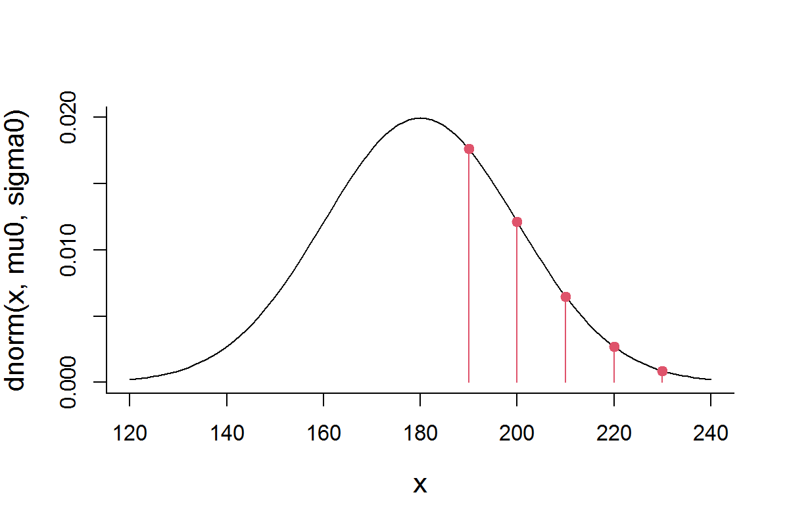
Now, we can compute the likelihood of the null parameters given all of these observations.The likelihood (a joint likelihood) is just the product of the likelihood for each of these points, because it is equal to the joint density distribution … this is because the Probability of \(n\) independent events is the product of the probabilities:
\[{\cal L}(\mu_0, \sigma_0 | {\bf X}) = \prod_{i=1}^n f(X_i|\mu_0, \sigma_0) \]
This is a very small number, but again - it is meaningless without having a comparison. Let’s compute the joint likelihood of our alternative model:
To machine power, the second model is MUCH LESS likely than the first model! To illustrate this:
curve(dnorm(x, mu1, sigma1), xlim=c(6.2,7.8), n=1000)
points(X, dnorm(X,mu1,sigma1), pch=19, col=2)
points(X, dnorm(X,mu1,sigma1), type="h", col=2)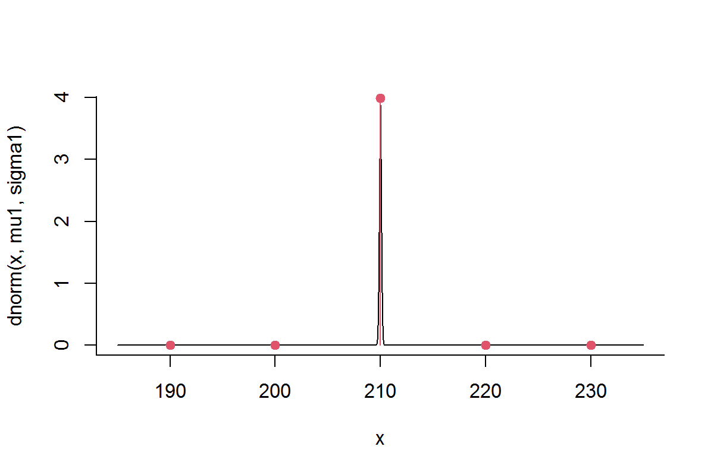
You see that the points away from 7 have extremely low probability, which brings the likelihood of this model way down.
8.2 The Maximum Likelihood Estimator
So - how do we find the parameters that maximize the likelihood?
These parameters are called the Maximum Likelihood Estimators (MLE’s), and are the “best” parameters in that they are the most precise. Remember, every estimate is a random variable and therefore comes with some variance. It can be shown that MLE’s have the smallest of those possible variances:
\[ \{ \widehat\theta_\mathrm{mle}\} \subseteq \{ \underset{\theta\in\Theta}{\operatorname{arg\,max}}\ {\cal L}(\theta\,|\,X_1,\ldots,X_n) \}\]
Translating to English:
the MLE estimators of parameters \(\theta\) are those values of \(\theta\) for which the likelihood function is maximized.
8.3 The Likelihood profile
Let’s look at a range of possible values for \(\widehat{\mu}\) and \(\widehat{\sigma}\). We can do this pretty efficiently in R:
First, pick some values to explore:
Now, write a function that computes the likelihood (which, as we recall, is a function of \(\mu\) and \(\sigma\), and “assumes” \(\bf X\))
And compute this likelihood for all the combinations of \(\mu\) and \(\sigma\) above, using the mighty outer() function:
Note (as a technical aside) that to get the Likelihood() function to work within outer(), it had to be “vectorized”. Happily, there is a function (Vectorize()) that does just that.
We can visualize our likelihood profile over those ranges of \(\mu\) and \(\sigma\)
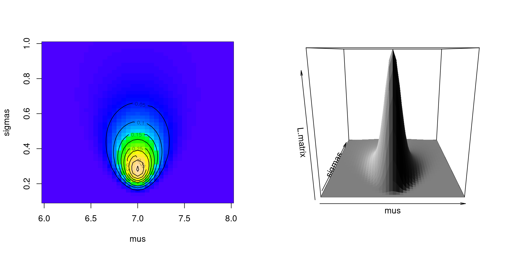
Clearly, there is a sharp peak in the likelihood around \(\widehat{\mu} = 7\) and somewhere just under \(\widehat{\sigma} = 0.3\). From our limited sets of values, we can find the values at the maximum:
row col
[1,] 21 10(mu.hat <- mus[max.indices[1]])[1] 7(sigma.hat <- sigmas[max.indices[2]])[1] 0.28And the (usually irrelevant) value of the likelihood is
max(L.matrix)[1] 0.45800068.3.1 Numerically finding the MLE
We don’t need to do this search ourselves - that’s why we invented electronic computing devices. The powerhouse function for optimizing functions in R is optim(), but it takes some getting used to. The (minimal) syntax is:
optim(p, FUN, ...)where:
-
pis a required vector of your initial guess for the parameters. -
FUN(p, ...)is a function that takes as its first argument a vector of parametersp - The
...refers to other arguments passed toFUN. Most importantly, this will be data!
See how I make it work below:
$par
[1] 7.0000003 0.2828426
$value
[1] -0.4582359
$counts
function gradient
89 NA
$convergence
[1] 0
$message
NULLSo - lots of output, but the key numbers we’re interested in are the top two, under $par. These are: \(\widehat{\mu} = 7.000\) and \(\widehat{\sigma} = 0.2828\). Good! it is what we expected.
The $value is very close to the (negative of the) maximum likelihood that we “hand-calculated”.
8.3.2 Comparing models side by side
PlotLikelihood <- function(mu, sigma, X, ...)
{curve(dnorm(x, mu, sigma), ...)
points(X, dnorm(X,mu,sigma), pch=19, col=2)
points(X, dnorm(X,mu,sigma), type="h", col=2)}
par(mfrow=c(1,3), bty="l")
PlotLikelihood(mu = 6, sigma=0.5, X, xlim=c(4,8))
title("Null Model")
PlotLikelihood(mu = 7, sigma=0.001, X, xlim=c(6.2,7.8), n = 1000)
title("Model 1")
pars <- optim(c(6,1), function(p) -Likelihood(p[1], p[2]))$par
PlotLikelihood(mu = pars[1], sigma=pars[2], X, xlim=c(5,9))
title("MLE Model")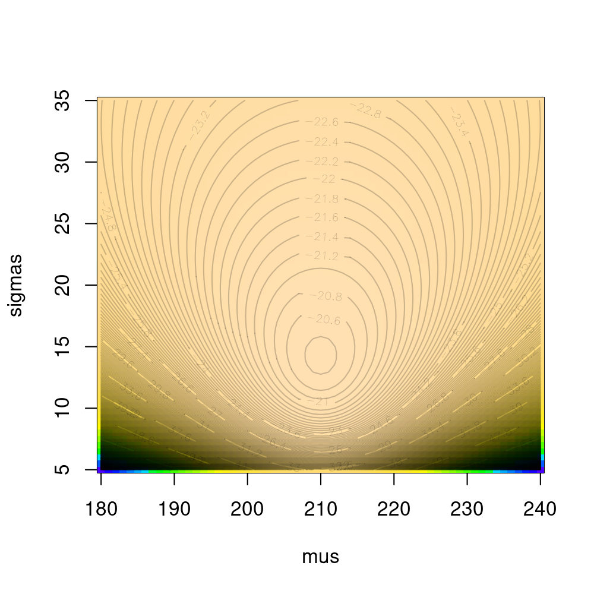
You can get a feel for the constraints on the MLE model: if \(\sigma\) were smaller, the contribution of the outlying points would become much smaller and bring the likelihood down; if \(\sigma\) were any larger, then the flattening would bring down too far the contribution of the central points.
8.3.3 Comparing with Method of Moment Estimators (MME’s)
Now … you might think that’s a whole lot of crazy to estimate a simple MEAN and VARIANCE.
You may have guessed that the best estimates are the sample mean:
\[\widehat{\mu} = \overline{X}\] and the sample standard deviation:
\[\widehat{\sigma^2} = s_x^2 = {1\over n-1}\sum (X_i - \overline{X})^2\]
The mean estimate matches, but the sample standard deviation doesn’t quite:
sd(X)[1] 0.3162278This suggests that the MLE of the variance - for all of its great qualities - is at least somewhat biased (remember: \(E(s_x^2) = \sigma^2\)).
Can you recognize what analytical formula gives the MLE of \(\sigma\)?
Note: this is a special case where the MLE is actually computable by hand, but in general it is not - and best to obtain numerically, as the examples that follow show.
8.3.4 Log-likelihoods
For a combination of practical and theoretical reasons, what we actually maximize is not the Likelihood but the log-Likelihood. The maximum will be in the same place for both functions, but the latter is MUCH easier to work with.
Likelihood: \[{\cal L}(\mu_0, \sigma_0 | {\bf X}) = \prod_{i=1}^n f(X_i|\mu_0, \sigma_0) \]
Log-likelihood: \[{\cal l}(\mu_0, \sigma_0 | {\bf X}) = \log({\cal L}) = \sum_{i=1}^n \log(f(X_i|\mu_0, \sigma_0)) \]
Sums are much easier to manipulate with algebra and handle computaitonally. Also, they help turn very very very small numbers and very very very large numbers to very very very ordinary numbers.
The number of particles in the universe is about 10^80 … its log is 184. The ratio of the mass of an electron to the size of the sun is 10^-60 … its log is -134.
L.matrix <- outer(mus, sigmas, Vectorize(Likelihood))
image(mus, sigmas, L.matrix, col=topo.colors(1000))
contour(mus, sigmas, L.matrix, add=TRUE, col="white")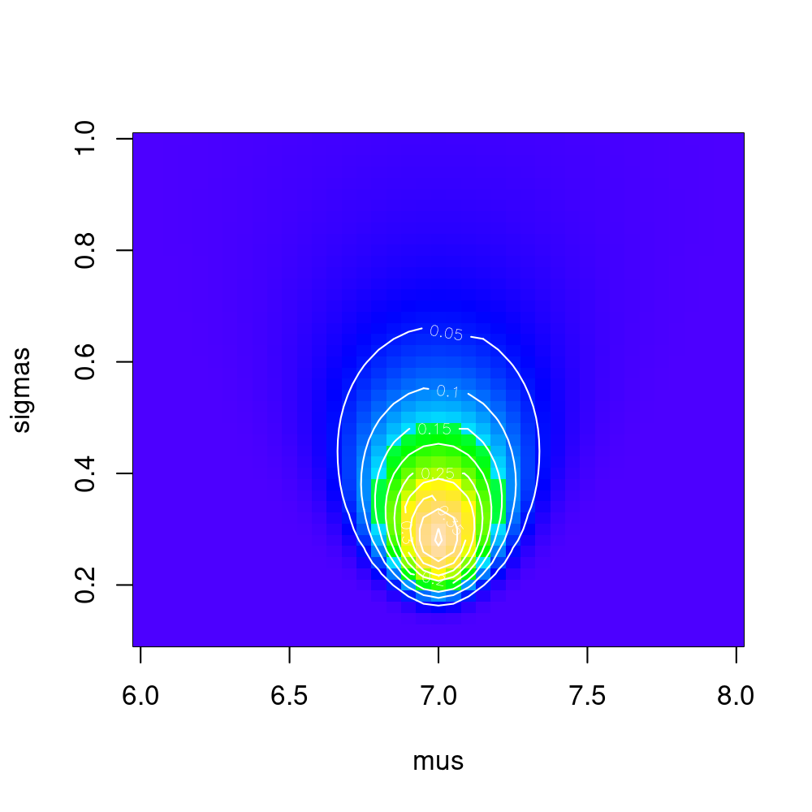
8.3.5 Confidence Intervals: A bit of theory
The peak of the (log)-likelihood surface gives you point estimates of parameters.
Likelihood theory provides an additional enormously handy (asymptotically correct) result with respect to standard errors around the estimates. Specifically (in words): The variance around the point estimates is equal to the negative reciprocal of the second derivative of the log-likelihood at the maximum.
This is actually very intuitive! The sharper the peak, the MORE NEGATIVE the second derivative, the SMALLER the (POSITIVE) variance. The flatter the peak, the LESS NEGATIVE the second derivative, i.e. the LARGER the variance.
\[\Sigma(\theta) = {\cal I}(\theta)^{-1}\]
Often (e.g. in these examples) we have several parameters here, so the jargon is fancier, but the idea is the same:
the Hessian is an n-dimensional second derivative (a matrix)
the Fisher Information (\(\cal{I}\)) is the Hessian of the log likelihood.
the inverse is the n-dimensional equivalent of “reciprocal”.
\(\Sigma\) is the variance-covariance matrix of the parameter estimates.
8.3.6 Confidence Intervals: Application
Ask optim() to compute the Hessian:
logLikelihood <- function(mu, sigma)
sum(log(dnorm(X, mu, sigma)))
(param.fit <- optim(c(1,1), function(p) -logLikelihood(p[1], p[2]), hessian=TRUE))$par
[1] 6.9999642 0.2828735
$value
[1] 0.7803712
$counts
function gradient
97 NA
$convergence
[1] 0
$message
NULL
$hessian
[,1] [,2]
[1,] 62.48637509 0.01580303
[2,] 0.01580303 124.94594137The inverse of a matrix (in R) is solve(M):
(Sigma <- solve(param.fit$hessian)) [,1] [,2]
[1,] 1.600349e-02 -2.024104e-06
[2,] -2.024104e-06 8.003462e-03The square root of the diagonal gives standard errors
And the confidence intervals are just:
cbind(hat = param.fit$par, CI.low = param.fit$par - 1.96*se, CI.high = param.fit$par + 1.96*se) hat CI.low CI.high
[1,] 6.9999642 6.7520146 7.2479138
[2,] 0.2828735 0.1075279 0.4582192
optim: Is the engine under a great many hoods of R functions!
John Nash: creator (and skeptic) of optim
see: http://www.ibm.com/developerworks/library/ba-optimR-john-nash/
8.4 Testing hypotheses and model selection with likelihoods
8.4.1 Likelihood Ratio Test:
Model 0 and Model 1 are NESTED
(i.e. Model 0 is a special case of Model 1) with \(k_0\) and \(k_1\) parameters.
Compute MLE’s: \(\widehat{\theta_0}\) and \(\widehat{\theta_1}\)
Compute likelihoods: \({\cal L_0(\theta_0|X)}\) and \({\cal L_1(\theta_1|X)}\)
important: the data \(X\) must be identical!
Likelihood Ratio Test Statistic: \[\Lambda = -2 \log \left( \frac{L_0}{L_1} \right) = 2 (l_1 - l_0)\]
under Null hypothesis (i.e. Model 1) has distribution \(\Lambda \sim \text{Chi-squared} (d.f. = k_1 - k_0)\)
An example:
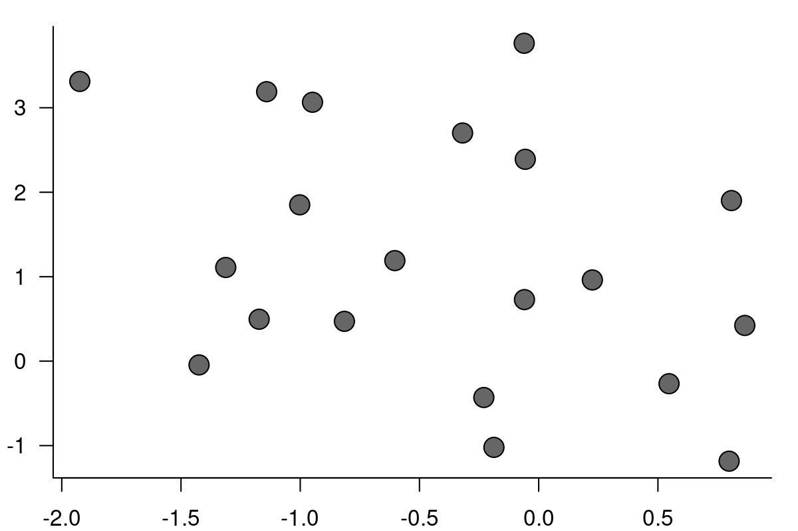
Competing models: \[M0: Y_i = \beta_0 + \epsilon_i\] \[M1: Y_i = \beta_0 + \beta_1 X_i + \epsilon_i\] where \(\epsilon\) are iid Gaussian.
Defining (negative) log-likelihood functions
Obtaining estimates
Performing test:
LRT <- 2*(-fit1$value + fit0$value)
1-pchisq(LRT, 1)[1] 0.10833168.4.2 Information Criteria
If models are not nested (most interesting sets of models aren’t) we can’t use a likelihood ratio test. Instead, we use the very very widely applied Akaike Information Criterion (AIC):
\[ AIC = - 2 \log(\cal L) + 2 k\]
c(AIC0 = 2*(fit0$value + 2*2),
AIC1 = 2*(fit1$value + 2*3)) AIC0 AIC1
79.56228 80.98389 Or … Bayesian Information Criterion (BIC) \[ BIC = - 2 \log(\cal L) + k \log(n) \]
BIC0 BIC1
83.54521 86.95828 Which? Why? - a complicated debate, different underlying assumptions But generally - if you want to be more parsimonious (i.e. protect from overfitting) BIC is a better bet.
8.4.3 In summary
If you have data and you can write a probability model in terms of parameters, no matter how strange or arbitrary seeming, there’s a good chance you can:
-
estimate those parameters,
- compare competing models,
- and probably obtain confidence intervals.
8.5 Panda pregnancy test example
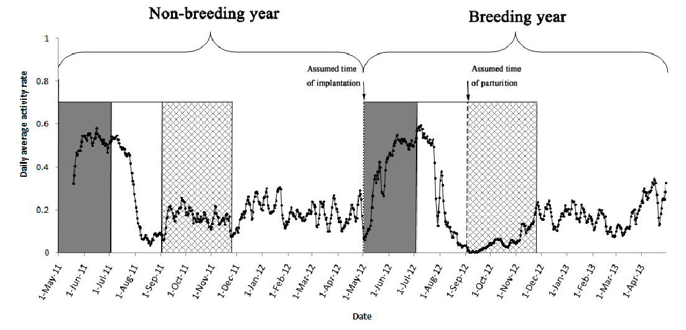
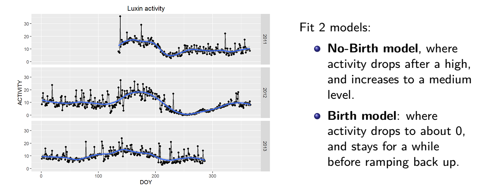
Likelihood ratio test = pregnancy test
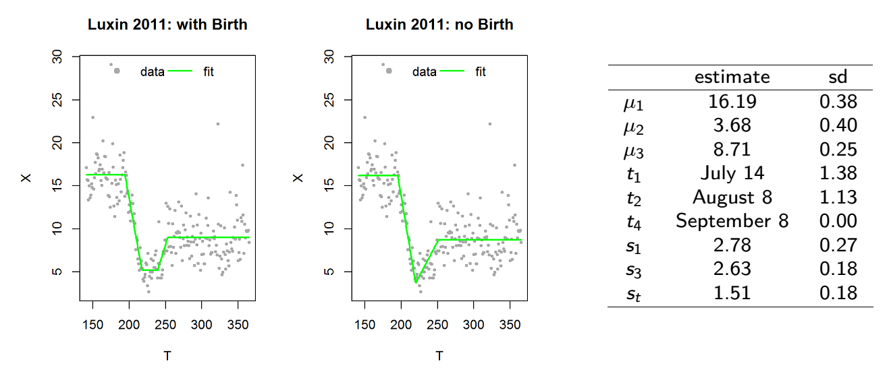
\(p\)-value of birth: 0.08
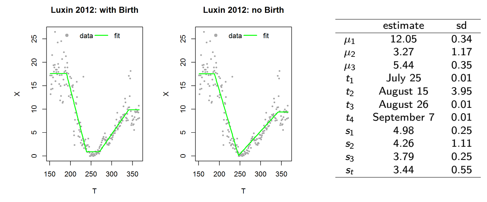
\(p\)-value of birth: 1e-11
8.6 Applying Likelihoods to movement data
We have seen that movement data often has:
- Skewed, Positive, step Length Distribution
- Wrapped turning angle distributions, clustered around 0^o

This combination is known as the Correlated Random Walk (CRW) model, probably the most commonly used basic movement model in ecology.
8.6.2 MLE of Weibull parameters
Here’s some sample data:
A function that returns the likelihood as a function of the parameters and data
Note 1: we use log() because it is much easier to SUM LOGS than it is to MULTIPLY SMALL NUMBERS.
Note 2: we return the NEGATIVE of the likelihood because the
optim()function likes to MINIMIZE rather than MAXIMIZE.
Run the optimization:
$par
[1] 2.020257 1.926387
$value
[1] 124.6168
$counts
function gradient
63 NA
$convergence
[1] 0
$message
NULLVisually assess the fit:
hist(Mod(diff(Z)), freq=FALSE, col="grey", breaks=10)
curve(dweibull(x, Weibull.fit$par[1], Weibull.fit$par[2]), add=TRUE, col=2, lwd=2)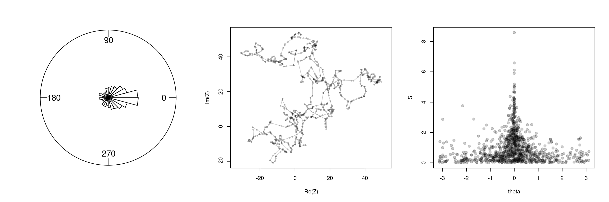
Not Bad!
8.7 Exercise 1
Use optim() to estimate the \(\kappa\) parameter in the Wrapped cauchy distribution Visualize the quality of the fits by comparing distribution curves to histograms.
Follow the template for the Weibull:
8.7.1 Exercise 2
Following the template below:
Estimate the Weibull step-length and wrapped Cauchy turning angle parameters for your movement data of choice.
Visualize the quality of the fits by comparing distribution curves to histograms.
Extra Credit: Compute standard errors around those estimates.
For discussion: What do YOU think about the CRW model?